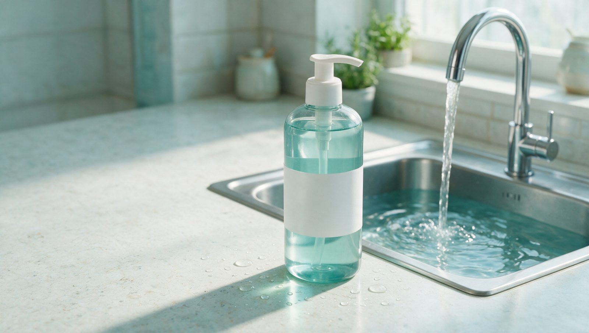
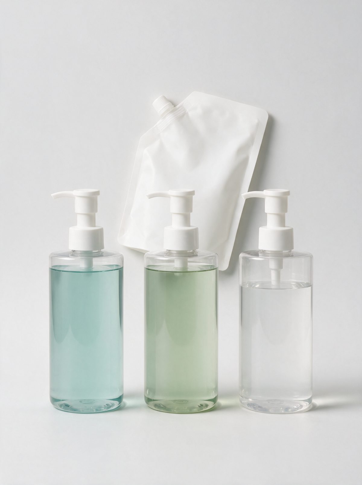
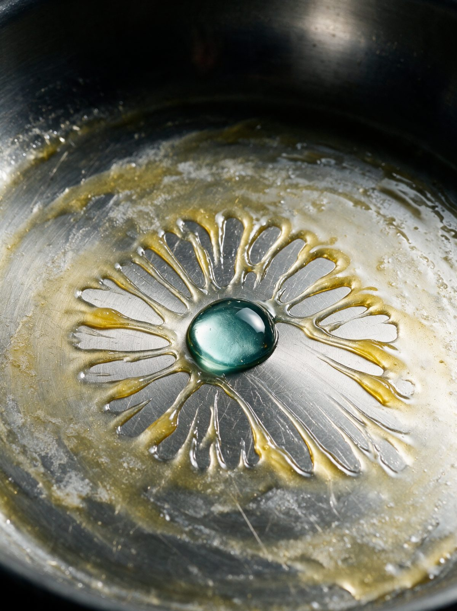
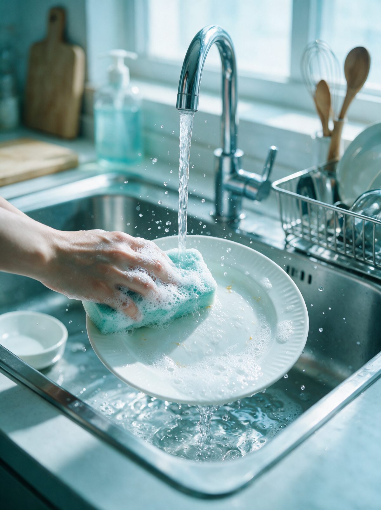

향료 무첨가
전 제품에 향료를 넣지 않았습니다. 설거지 뒤 그릇에 남는 냄새를 줄이는 쪽을 택했습니다.
뽀득 · 주방 세정 라인
물에 빠르게 풀리고, 그만큼 빠르게 빠집니다. 뽀득은 세제 한 병으로 끝나는 브랜드가 아닙니다. 싱크대 앞에서 필요한 세정제 세 종과, 용기를 계속 쓰는 1L 리필 파우치로 이어집니다.
물이 위에서 아래로 지나갑니다. 지나간 자리에서 기름막이 열두 칸으로 갈라집니다. 칸이 비면 그 자리는 헹굼이 끝난 자리입니다.

라인업
기름 묻은 접시, 흙 묻은 채소, 입에 닿는 젖병. 하는 일이 서로 달라서 한 가지 세제로 합치지 않았습니다.
세 제품 모두 향료와 색소를 넣지 않고, 같은 1L 파우치로 리필합니다. 용기는 500ml 한 가지 규격이라 라벨만 바꿔 끼우면 됩니다.



기름때가 남은 식기용. 미온수에서 거품이 빨리 정리돼 헹구는 물을 줄이는 데 도움이 됩니다.
기름 식기중성 · pH 7 전후
겉면의 흙과 남은 이물질을 씻어내는 데 도움을 줍니다. 사용 후에는 흐르는 물로 충분히 헹궈 주세요.
채소·과일흐르는 물 30초 헹굼
젖병과 유아 식기용. 좁은 입구 안쪽에 남는 분유 잔여물을 닦아내는 데 도움이 됩니다.
젖병·유아 식기전용 솔과 함께 사용
헹굼 시간
같은 양의 식기를 씻을 때 헹구는 시간이 평균 22% 짧았습니다.¹
용기 수
1L 파우치로 네 번 리필하면 500ml 용기 여덟 개를 새로 사지 않습니다.
전 성분 공개
아홉 가지 성분을 표에 전부 적었습니다. 생략한 줄은 없습니다.
| 성분명 | 역할 |
|---|---|
| 정제수 | 용제 |
| 소듐라우릴글루코사이드카복실레이트 | 세정 · 식물유래 계면활성제 |
| 데실글루코사이드 | 세정 · 식물유래 계면활성제 |
| 코카미도프로필베타인 | 세정 보조 · 거품 안정 |
| 글리세린 | 점도 조절 |
| 소듐클로라이드 | 점도 조절 |
| 시트릭애씨드 | 산도 조절 |
| 소듐벤조에이트 | 보존제 |
| 포타슘소르베이트 | 보존제 |
향료와 색소는 넣지 않았습니다. 표는 주방세제 500ml 기준이며, 과일·야채 세척제와 젖병 세정제의 전 성분은 각 제품 페이지에 같은 형식으로 적어 두었습니다.